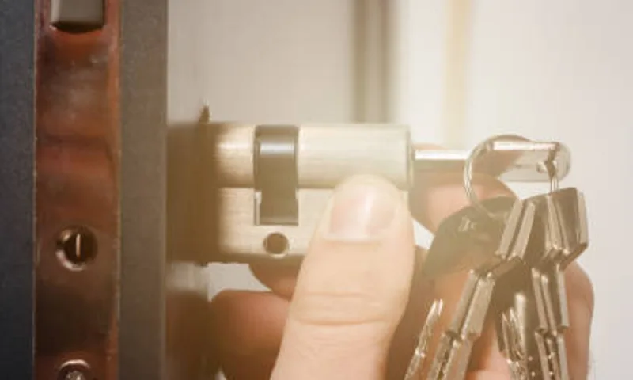

Нужно заранее понять бюджет до вызова мастера.
Санкт-Петербург · Срочный выезд мастера
Сколько стоит заменить замок в Санкт-Петербурге
Сколько стоит заменить замок, зависит от типа двери, модели механизма и срочности выезда. Ниже собрали ориентиры по ценам в Санкт-Петербурге и объяснили, из чего складывается итоговая стоимость работ.
Срочно по СПб
Без лишних повреждений
Прозрачная цена
Гарантия на работы

от 30 минсредний выезд
Когда нужна услуга
В каких случаях важно заранее знать стоимость
Сомневаетесь, менять только личинку или весь замок.
Есть риск переплаты за ненужные дополнительные работы.
Требуется срочная замена и важно знать диапазон цены.
Что мы делаем
Как формируется стоимость замены замка
- Поясняем разницу между заменой цилиндра и корпуса замка.
- Считаем стоимость по телефону по вашим вводным данным.
- Подтверждаем итоговую цену после осмотра на месте.
- Показываем, что входит в работу и за что доплата не нужна.
- После монтажа проверяем работу и фиксируем результат.
Преимущества
Преимущества прозрачного расчета
- Понятная структура цены: работа, механизм, доп. операции.
- Срочный выезд мастера по СПб и Ленобласти.
- Без навязывания лишних услуг.
- Согласование стоимости до начала работ.
- Гарантия на выполненную замену замка.
Цена
Сколько стоит заменить
замок в СПб
| Услуга | Работа | Механизм | Итого |
|---|---|---|---|
| Замена личинки | от 700 ₽ | от 800 ₽ | от 1 500 ₽ |
| Замена замка (стандарт) | от 1 000 ₽ | от 1 200 ₽ | от 2 200 ₽ |
| Замена замка (усиленная дверь) | от 1 500 ₽ | от 1 500 ₽ | от 3 000 ₽ |
| Ночной/срочный выезд | от 1 800 ₽ | — | по ситуации |
Диапазоны актуальны на апрель 2026 года для Санкт-Петербурга. Финальная стоимость согласуется до начала работ.
Как проходит работа
Как проходит расчет
и замена замка
- Звонок или заявка: фиксируем задачу, адрес и удобный формат связи.
- Диагностика на месте: мастер проверяет дверь, замок и варианты решения.
- Согласование: озвучиваем цену и начинаем работу только после вашего подтверждения.
- Проверка результата: тестируем замок, передаем ключи и гарантийные условия.
FAQ
FAQ по стоимости
замены замка
Почему цена по телефону и на месте может отличаться?
Потому что окончательная стоимость зависит от фактической конструкции двери и состояния замка.
Что дешевле: заменить личинку или весь замок?
Чаще дешевле и быстрее заменить цилиндр, если корпус исправен.
Входит ли выезд в цену?
Условия выезда зависят от района и времени обращения, оператор уточнит это заранее.
Есть ли фиксированная цена под ключ?
Да, после диагностики мастер согласовывает итог до начала работ.
Можно ли оплатить после проверки?
Да, оплата производится после выполнения и проверки работы замка.